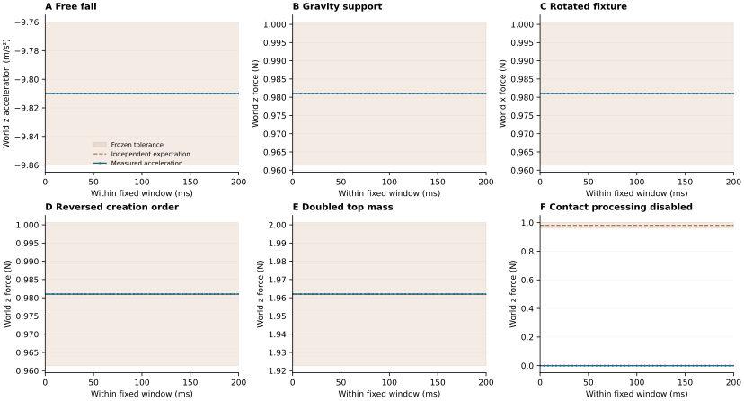

物体被支撑，接触报告却为零
同一个 C1 夹具，实际关闭设置在全部 1049 个受控步骤读回为 true。平均接触对力为 0 N，全部 49 点支撑检查均失败；这是预期负对照，不能计为正向校准。
MEASUREMENT → EXPERIENCE → POLICY
有时间要求的化学操作，需要知道动作何时真正发生、操作是否实际完成。我们先校准接触力的方向、量纲与事件时钟，再验证恢复经验能否改善一个共享机器人策略。
证据数据加载失败。请刷新页面，或下载下方状态 JSON；页面不会用预期结果补齐实际结果。
LATEST / V03 · ACTUAL NATIVE EVIDENCE
v02 的零接触报告问题有了同源反事实对照：关闭接触处理时，稳定堆叠仍报告零支撑力；开启后，固定窗口恢复与已知模拟重力一致的世界支撑力。各案阈值、几何、dt 和计分窗口沿用封存协议。
同一个 C1 夹具，实际关闭设置在全部 1049 个受控步骤读回为 true。平均接触对力为 0 N，全部 49 点支撑检查均失败；这是预期负对照，不能计为正向校准。
实际关闭设置在全部 1049 步读回为 false。平均世界 z 支撑力 0.981000033 N，最大支撑残差 2.89e-07 N。有符号 contact scalar 保留负值，未取绝对值或删除。
| 案例与问题 | 实际接触报告 | 受控步 / 窗口 | 独立审计 | 实际证据 |
|---|---|---|---|---|
| C1 · OFF 对照同一堆叠夹具，关闭接触报告 | OFF实读 disabled = true | 1049 步tick 1000–1048 · 49 点 · 1 epoch | 预期物理失败 · 原样保留49/49 点的 mg 与速度差分支撑检查均失败 | 独立报告 ↗全部 49 点 ↗ |
| C0 · 自由落体无地面、无第二物体，检查实际重力加速度 | ON实读 disabled = false | 120 步tick 71–119 · 49 点 · 1 epoch | 条件夹具校准通过 | 独立报告 ↗全部 49 点 ↗ |
| C1 · 重力支撑0.1 kg 上方物体的支撑力、反作用力与 dt | ON实读 disabled = false | 1049 步tick 1000–1048 · 49 点 · 1 epoch | 条件夹具校准通过 | 独立报告 ↗全部 49 点 ↗ |
| C2 · 旋转夹具同步旋转夹具和重力，检查世界坐标方向 | ON实读 disabled = false | 1049 步tick 1000–1048 · 49 点 · 1 epoch | 条件夹具校准通过 | 独立报告 ↗全部 49 点 ↗ |
| C3 · 创建顺序改变创建顺序，检查世界力表示；隐藏顺序仍未知 | ON实读 disabled = false | 1049 步tick 1000–1048 · 49 点 · 1 epoch | 条件夹具校准通过创建顺序机制：INCONCLUSIVE | 独立报告 ↗全部 49 点 ↗ |
| C4 · 质量倍增上方质量 0.1 → 0.2 kg，其他物理参数不变 | ON实读 disabled = false | 1049 步tick 1000–1048 · 49 点 · 1 epoch | 条件夹具校准通过 | 独立报告 ↗全部 49 点 ↗ |
ACTUAL / ALL 49 · UNSMOOTHED

C3 的世界力一致性检查通过，实际 actor 顺序代理发生变化；完整 backend shape 顺序仍不可观测，因此创建顺序机制为 INCONCLUSIVE。这些是模拟夹具的条件测量证据，尚未证明硬件 SI、全机器人承重/卸载/扭矩或完整隐藏约束。
六案正常退出支持当前受控生命周期；缺少 AFTER_APP_CLOSE 标记，Python 关闭函数实际返回仍为 UNKNOWN。主方法 M vs B3：UNTESTED；训练 GPU 时间 0，合格 S/F/R 0，真实化学终点 0。
本批次 6 个新 epoch / 5,365 个受控步骤；此前校准实际 3 案仍保留，校准家族累计 9。关闭诊断 1 案与旧 M 家族另计。v01 剩余四案、v02 剩余三案仍未执行；本页发布不增加实验授权。
下面的 v01 / diagnostic / v02 历史、失败表与旧曲线继续保留。
01 / RETAINED EVIDENCE
旧失败保留；新版本单独执行与计账。
C0 产生步骤文件后，进程在 300 秒边界被终止。其余四项保持未执行；这次结果没有生成物理评分。
原拒绝审计 ↗默认关闭路径再次超时。记录显示 Replicator 已停止，stage 关闭触发回调等待 PLAY；结果写入已经完成。
独立边界诊断 ↗只在 END 与 RESULT 完整写入后释放所属回调，再沿用默认关闭路径。五项数值、窗口与阈值保持冻结。
前瞻协议与预算 ↗原 M0/M1/M2 家族保持封存。新 v02 的五项来自结果前冻结的协议；质量对照不会按结果选择，也没有第六个隐含案例。
02 / V02 RETAINED BATCH
正在读取五个案例状态…
| 案例 | 检验问题 | 受控步 / 固定窗口 | 实际状态 | 证据 |
|---|
“正常退出”是进程生命周期结果；“条件夹具校准通过”必须来自独立审计。C3 的隐藏 backend shape 顺序不可直接观测时，创建顺序机制仍须报告 INCONCLUSIVE。
审计图尚未生成
这里只展示实际固定 49 点数据，不使用预测曲线、最佳窗口或缺失值填零。03 / WHAT THIS EVIDENCE SUPPORTS
完成一个工程环节，不会自动证明下一层收益。
用自由落体、重力支撑、旋转、创建顺序与质量变化，检验有符号接触表示、dt 转换和世界坐标。
全机器人承重、卸载、扭矩与完整隐藏约束仍未由这些夹具证明。
90 项作者测试 + 6 项独立探针通过。完整 CPU trace 保留 13,995 条命令，FIFO 仍绑定原作者；8×9 输出逐行记录。
软件边界通过；真实学生 rollout、原生 collector 接通与 S/F/R 准入仍开放。
独立软件审查 ↗已完成一次 200 步 CPU 行为重构，产生一个工程 checkpoint。它来自同一已见 episode 的小规模拟合。
不是主 VLA 对照、闭环策略成功或任务泛化证据。
实际训练记录 ↗新组件通过 24 项作者检查与 8 个独立探针，阻止已接受事件的时间回退，保留推理开始时的输入快照。尚未接通 G1 真实异步原生采集器，不能据此声称持续物理时钟或模型闭环已通过。
共享训练样本和同状态输入检查保持相同公共前缀；独立闭环匹配初始条件、信息接口与预算，允许策略产生不同轨迹。时间事件账本和可验证恢复经验，能否改善原任务完整成功率，并保留到共享策略权重中？
04 / SOURCE-BOUND ARTIFACTS
状态、审计与稿件分别标注其范围。